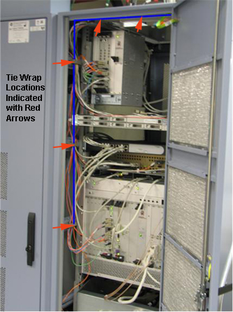

| NOTE: | Originally, the cable from the power strip was routed toward the back of the PGR Cabinet. When replacing the power strip, route the cable toward the front of the cabinet for easier access. (See illustration below; blue line represents the power strip cabling.) |
Illustration 4: Routing of Power Strip Cabling with Tie Wrap Locations
